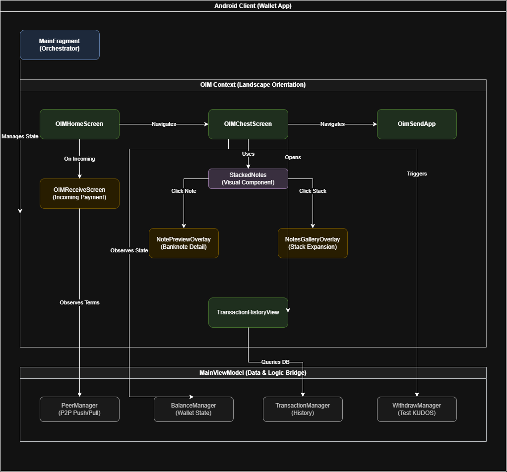

Developer Guide
Installation (For Developers)
1. Clone the Repository
By HTTPS
##### HTTPSgit clone https://github.com/csc301-2025-f/project-9-Orali-Project-for-Android.git
cd project-9-Orali-Project-for-Android
By SSH
##### SSHgit clone git@github.com:csc301-2025-f/project-9-Orali-Project-for-Android.git
cd project-9-Orali-Project-for-Android
2. Build the Project
Ensure the Java Development Kit 17 (JDK 17) is installed before running the Gradle commands below.
Windows (Command Prompt and Powershell)
##### Windows (Command Prompt)gradlew.bat :wallet:build
.\gradlew.bat :wallet:build
Linux and Mac
##### Linux / Mac./gradlew :wallet:build
Tech Stack
Languages - Kotlin (JVM 17) - Jetpack Compose (UI) - Kotlin Serialization
Build & Tooling - Gradle - Android Gradle Plugin 8.9.2 - Protobuf (Lite runtime) - Git (commit-based nightly versioning)
Android
- minSdk 26
- targetSdk 35
- compileSdk 35
- ViewBinding + Compose
- Product Flavors: fdroid, google, nightly
- ABI Splits: armeabi-v7a, arm64-v8a, x86, x86_64
Major Libraries - Compose BOM 2025.05.00 - Material3 - ConstraintLayout - Lifecycle ViewModel + LiveData - Navigation Component (Safe Args plugin) - DataStore + Protobuf - Coil (images) - ZXing (QR) - Markwon (Markdown rendering) - Ktor Client (Networking) - Qtart AAR (Crypto / Logic) - JNA - Apache Commons Text
Testing - JUnit 4.13.2 - org.json
Architecture Diagram
 High-level architecture of the Orali Money Android application.
Architecture Overview
The application follows a clean separation of concerns, organized into three main layers:
-
Orchestration Layer:
- MainFragment: Acts as the central orchestrator, managing the overall state and transitions between different modes (Standard vs. OIM).
-
OIM Context (UI Layer):
- Operates exclusively in Landscape Orientation.
- Screens:
OIMHomeScreen(entry),OIMChestScreen(main dashboard),OimSendApp(sending flow), andOIMReceiveScreen(receiving flow). - Visual Components:
StackedNoteshandles the rendering of currency stacks. Users can interact with these stacks to view details viaNotePreviewOverlayor expand them usingNotesGalleryOverlay. - History:
TransactionHistoryViewvisualizes past transactions (e.g., the River View).
-
Data & Logic Layer:
- MainViewModel: Serves as the bridge between the UI and the underlying data managers.
- Managers:
PeerManager: Handles P2P communication (Push/Pull).BalanceManager: Manages the current wallet state and funds.TransactionManager: Handles transaction history and persistence.WithdrawManager: Manages withdrawal operations (specifically for Test KUDOS).
This architecture ensures that UI components remain lightweight and focused on presentation, while business logic and data management are centralized in the ViewModel and Managers.
Design Rationale
Concurrency, Performance, and Real-World Devices
OIM is designed for environments where devices are modest and resources are limited. The goal was to build something that behaves the same way on a modern phone and on older devices such as Tecno Spark 7, Itel A56, Tecno Pop series, Samsung J2, Samsung A10, and similar models that are still heavily used across West Africa. Many of these phones run with 1 GB or 2 GB of RAM, limited CPU power, and storage that becomes slow when the device fills up. These constraints shaped the entire architecture.
Minimal Threading for Predictability
The app uses a mostly single thread model, because the dataset is small and does not justify multiple threads. A simple architecture works better when the hardware is not powerful.
- It avoids complicated coordination between coroutines.
- Lifecycle events are easier to reason about.
- UI updates always occur in a predictable sequence.
- There is less chance of race conditions or partial updates.
- Debugging becomes straightforward because logic runs in a single flow.
This approach reduces surprises and ensures that the interface feels stable even on phones that struggle under heavier workloads.
How Older Phones Influence the Design
In the communities where OIM will be used, users often rely on slow devices that are several years old. These devices typically have:
- limited RAM
- slower multi core processors
- weak GPU pipelines
- slow eMMC storage
- fragile thermal performance
Running several asynchronous tasks at once can cause stutters or frame drops. Even lightweight background work can cause delays if the device is already under strain from Android services or Google Play components. Keeping OIM lightweight avoids these issues and keeps the experience smooth.
Safe Use of Background Work
Some operations still run off the main thread, such as small parsing tasks or loading local note images. However:
- these are short lived
- they never involve heavy computation
- they avoid adding pressure to the system
This maintains consistent rendering and protects the user from slowdowns.
Backend Limitations and On Device Processing
The backend that powers OIM is managed by partner organizations and cannot be modified. The OIM team could not change any schema, add metadata, or restructure responses. This imposed several limitations.
What Could Not Be Changed
- backend response format
- transaction structure
- available fields
- metadata support
- categorization
- additional endpoints
Since the backend could not be touched, the app performs all computation for the river view on the device itself.
What the Device Computes
- transaction grouping
- scaling
- layout logic
- metaphor mapping
- date and time translation
- amount based sizing
The river view works fully offline using only the minimal transaction data provided. This allows total independence from backend capabilities while still maintaining visual richness.
Why the App Does Not Use AI
There were several reasons why AI was intentionally excluded, even though it could help with categorization and insights.
No Backend Compute
The backend environment does not have the CPU or GPU capacity to run even small AI models. There was no space to deploy transformers or even lightweight models.
Running AI on the Device Is Not Practical
Most users rely on low budget devices that cannot support quantized neural networks. Running inference on these devices would lead to:
- slow interfaces
- memory exhaustion
- thermal issues
- battery drain
The risk outweighed the benefit.
No AI Ready Data
Because backend endpoints cannot be changed, the app receives no metadata about:
- transaction type
- category
- merchant
- labels
- description structure
AI systems need structured data to generate meaningful insights. Without it, they would perform poorly.
Stability Comes First
The project prioritizes predictable behavior. Heavy AI computation contradicts that goal. Simplicity makes the application more reliable.
Architecture and Code Structure
The app uses an architecture that emphasizes clarity and maintainability.
Separation of Responsibilities
- The MainViewModel manages state and data.
- Screens display the UI and contain no business logic.
- Composable components are reusable and lightweight.
This creates a clean, understandable flow for future contributors.
Reusable UI Components
The app uses unified components across multiple screens.
Examples include:
- stacked note renderer
- notes gallery overlay
- amount parser
- transaction mapping utilities
Whenever assets or logic change, these updates propagate everywhere automatically.
Resource Mapping
All currency, note denominations, and transaction purposes map through a single place. This prevents errors and simplifies updates.
Mock Database
During development, the biggest structural limitation was the fact that the backend environment could not be consistently accessed, modified, or extended by the OIM engineering team. The partner organizations controlled the database schema, API endpoints, migration schedule, and infrastructure uptime. This created a situation where development needed to proceed at full speed without depending on backend availability.
Because of this, OIM required a fully standalone, schema-accurate mock database that could act as a drop-in replacement for the real database during development. The motivation for this choice was much deeper than simply wanting “offline testing”. It emerged from a combination of practical, operational, and architectural needs.
Ensuring Development Continuity
The backend environment was frequently inaccessible due to:
- limited uptime during certain hours
- shared testing environments with other partner teams
- network instability when working from field locations
- maintenance windows and database resets outside our control
Without a local mock database, UI development would have stalled for days at a time. The mock DB ensured that:
- developers could continue working when the real backend was offline
- UI prototypes were testable even during infrastructure outages
- QA could reproduce cases without needing to simulate server resets
- regressions could be caught without relying on backend data
This decision protected the development timeline and allowed continuous iteration.
A Controlled and Repeatable Data Environment
The mock database also provided a stable sandbox. The real backend could not guarantee:
- consistent test data
- stable transaction IDs
- reproducible states for payment flows
- fixed balances for predictable screenshots
The mock DB made it possible to create:
- deterministic test scenarios
- predictable transaction histories
- consistent wallet states
- reliable edge-case reproduction (zero balance, large inflows, rapid sends, etc.)
This was essential for building and debugging features like the river view, note stacking animations, and consolidated purpose selection.
Compatibility With the Real Schema
The mock database was engineered to mirror the real schema exactly, including:
- field names
- field types
- table structures
- indexing assumptions
- timestamps
- transaction direction conventions
This ensured that once the backend became available:
- integration required almost no changes
- switching from mock → real DB was a one-line swap
- every piece of UI logic already matched the real data model
- no mass refactoring was necessary
The mock DB therefore served as a long-term investment in stability, not just a temporary convenience.
Enabling Visual Feature Development Without Backend Support
Several features in OIM, such as:
- the river view
- scaling farms and lakes
- stacked note consolidation
- amount mapping into denominations
- date icon assignment
all required derived or aggregated data that the backend did not provide.
The mock DB allowed local generation of:
- synthetic transaction histories
- large sequences of inflows and outflows
- stress test cases
- unusual patterns (e.g., clustered sends, missing purposes, extreme amounts)
Without this, it would have been impossible to test the visual design under realistic workloads.
Protecting the Backend From Accidental Load
During development, UI screens refresh state frequently, especially when testing animation loops or rapid interactions. Running these tests directly against the real backend could have:
- created unnecessary load
- polluted production-adjacent logs
- generated accidental transactions
- triggered rate-limit or throttle protections
- introduced audit noise for partner teams
The mock DB acted as a safety barrier, absorbing all local experimentation and ensuring the backend remained stable and clean.
Future Integration Safety
Because the mock DB is structurally identical to the partner database, any future backend improvements or migrations will only require:
- updating a single mapping layer
- reusing all existing UI logic
- leaving the composables and ViewModel untouched
This makes the architecture long-lived and maintainable.
Automated Testing and Deployment
This repository does not have automated testing. The Taler wallet depends on legacy code to run, and large scale unit testing was out of the scope of this project.
Orali Money contains developer releases on this repository and will have official releases on the F-Droid store.
Coding Guidelines
We follow Kotlin style guidelines and Android Best Practices. In addition, we use ktlint.
Documentation Deployment
This documentation is built with MkDocs.
Local Development
To preview the documentation locally:
- Install MkDocs and Material theme:
bash pip install mkdocs mkdocs-material - Run the development server:
bash mkdocs serve - Open
http://127.0.0.1:8000in your browser.
Deploying to GitHub Pages
To deploy the documentation to GitHub Pages:
- Ensure you have permissions to push to the repository.
- Run the deployment command:
bash mkdocs gh-deployThis will build the static site and push it to thegh-pagesbranch. Ensure GitHub Pages is configured to serve from this branch in the repository settings.